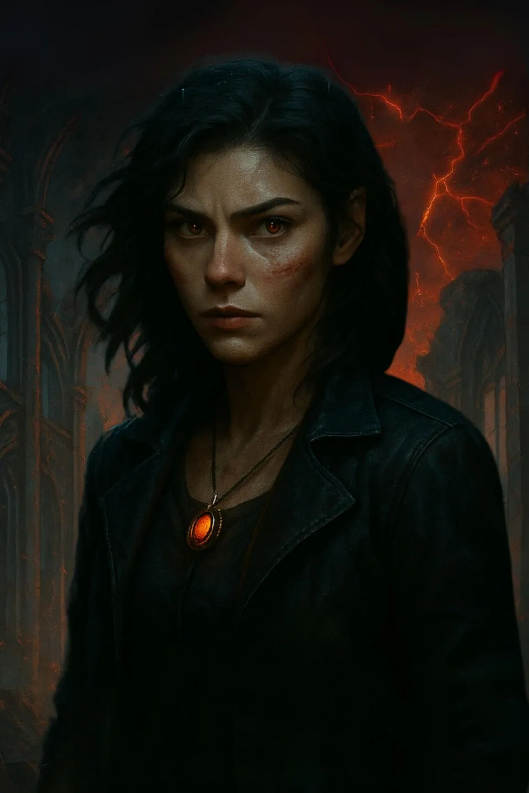

Tessa Cole
The Hybrid · The Blood That Remembers
Once ordinary. Now hunted. Her power pulses beneath her skin like a curse — and she walks the line between rebellion and ruin.
“I didn't ask for this power. But I won't run from it either.”
Read profile